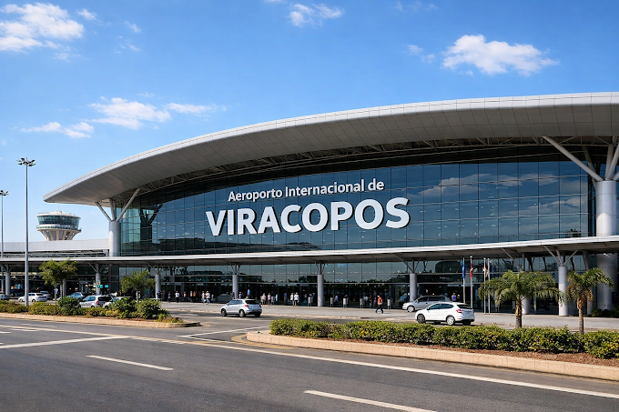
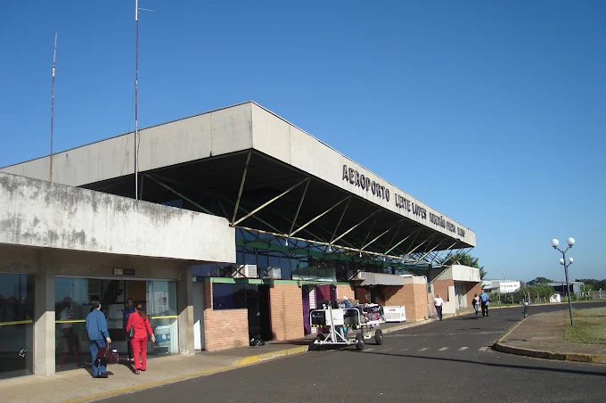
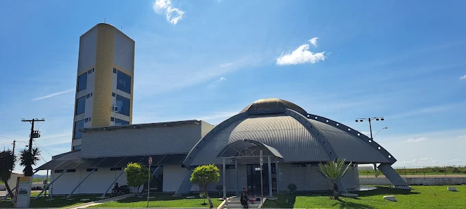

Transporte executivo porta a porta
Translado para aeroportos com tranquilidade em cada quilômetro.
Atendimento para passageiros, famílias, grupos e empresas, com veículos executivos, espaço para bagagens e planejamento de horários.

Sprinter Executiva
O conforto começa antes do embarque.
A Sprinter Executiva da DGS Viagens foi preparada para oferecer uma experiência diferenciada em viagens curtas e longas. O interior reúne bancos confortáveis, climatização, cortinas, iluminação ambiente e acabamento de alto padrão.
- Bancos executivos reclináveis
- Iluminação ambiente em LED
- Climatização eficiente
- Privacidade durante o trajeto
- Atendimento individual, familiar ou em grupo
Conheça o interior
Conforto real em cada detalhe
Ambiente preparado para tornar o deslocamento ao aeroporto mais confortável e tranquilo.
Destinos atendidos
Principais aeroportos da região
Escolha o terminal e fale com a DGS para receber um orçamento personalizado conforme cidade de saída, passageiros, bagagens e horário.
GRU
Aeroporto Internacional de Guarulhos
Principal hub internacional do país, ideal para viagens nacionais e internacionais.
Solicitar translado para GRUCGH
Aeroporto de Congonhas
Uma das principais opções para voos domésticos e compromissos na capital paulista.
Solicitar translado para CGH
VCP
Aeroporto Internacional de Viracopos
Terminal moderno em Campinas, com conexões nacionais e internacionais.
Solicitar translado para VCP
RAO
Aeroporto Dr. Leite Lopes
Importante aeroporto do interior paulista para negócios, turismo e conexões nacionais.
Solicitar translado para RAO
VAG
Aeroporto de Varginha
Opção regional estratégica para passageiros do Sul de Minas.
Solicitar translado para VAGComo funciona
Uma viagem planejada do início ao fim
Envie os dados
Informe origem, aeroporto, data, passageiros e bagagens.
Receba a proposta
A DGS calcula a melhor solução para o seu deslocamento.
Confirme a reserva
Alinhamos endereço, horário de saída e detalhes do embarque.
Viaje tranquilo
Você segue ao aeroporto com conforto e atendimento profissional.